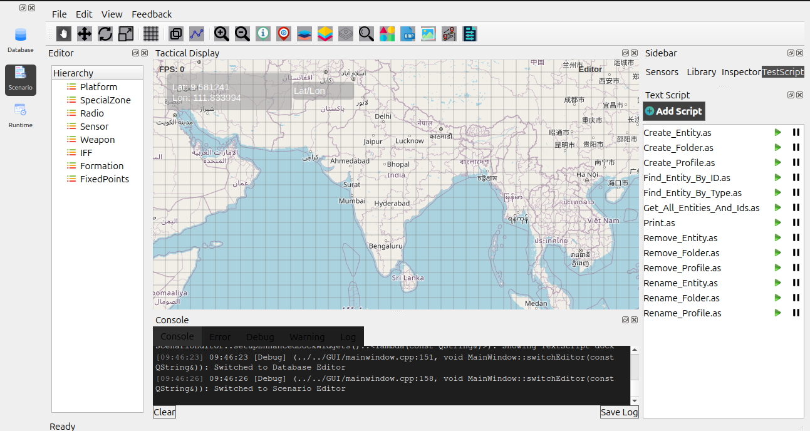
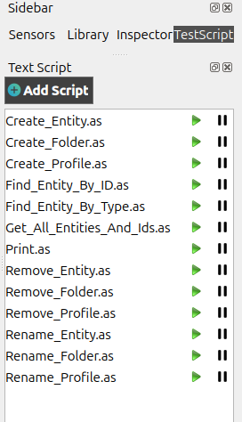
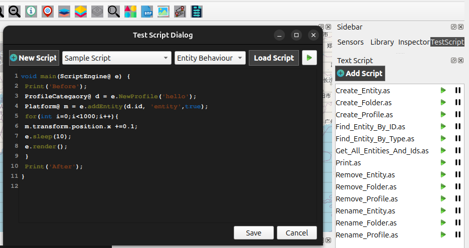
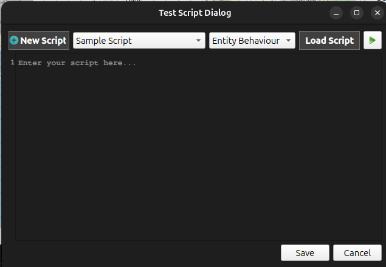
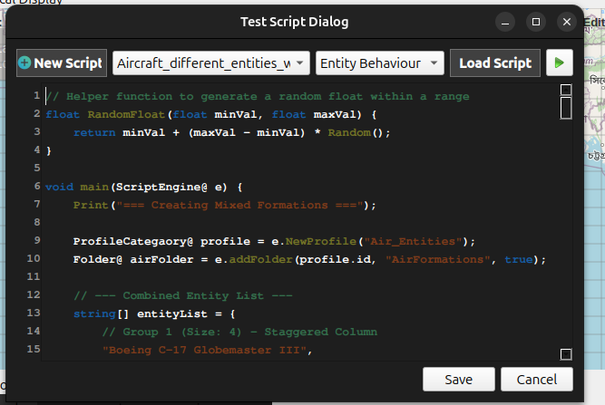

Adding and Running Scripts in Scenario Editor
This section explains how to add, load, edit, save, and run scripts inside the Scenario Editor. Scripts allow you to automate behaviors, test entity logic, and control scenario operations dynamically.
Introduction to Scripts
Scripts in the Scenario Editor are used to:
Control entity behaviors
Automate scenario actions
Test different simulation functions
Load and run predefined logic
Switch or modify entity states during a scenario
You can write a new script manually, load existing script files, or execute default sample scripts.
Switch to the Scenario Editor
Before working with scripts, switch from the Database Editor to the Scenario Editor and Click Scenario to enter the Scenario Editor and click Test Script from the sidebar to open the Text Script.
{kind=link}

Select a Script (testScript)
On the left panel, locate testScript and click it to open its details.
{kind=link}

Open the Script Panel
On the right-side panel, locate the Test Script section and and open a testScript Dialog box. This panel allows adding, editing, loading, running, and saving scripts.
{kind=link}

Adding a New Script
To create a completely new script:
Click New Script in the Script Panel.
A script editor window will appear where you can type your script.
{kind=link}

Default Scripts
Some default scripts may be available for quick usage, such as:
Sample script
Create Entity
Create Folder etc…
These can be loaded, edited, and executed directly.
Switch Entity Behavior Using Scripts
Scripts can also be used to change entity behaviors dynamically. Examples include:
Switching from idle to patrol
Changing movement paths
Updating sensor modes
Triggering specific actions
You can write such logic inside the script editor and run it immediately.
Running the Script
After writing or loading a script, click on button to Run and execute it.
{kind=link}

Loading an Existing Script
If you already have a saved script:
Click Load Script.
Select the script file from your system.
The script will open inside the editor.
Saving a Script
After modifying or creating a script:
Click Save Script.
Enter a file name.
The script will be saved for future use.
This allows you to reuse scripts across different entities or scenarios.